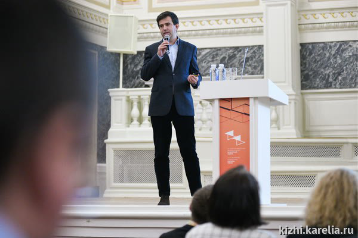

H1 Заголовок статьи
Теперь у всех, желающих посетить остров Кижи, есть возможность увидеть всемирно известные памятники деревянного зодчества с высоты птичьего полета, насладиться тишиной, покоем и первозданной гармонией заповедного острова, почти безлюдного после окончания навигации.
В программу «Кижи с высоты птичьего полета» входит обзорная экскурсия по основной экспозиции музея, во время которой гостей ждет знакомство с Кижским архитектурным ансамблем — одним из трех первых объектов ЮНЕСКО в России, наряду с Московским Кремлем и историческим центром Санкт-Петербурга. Вас ждут уникальные многоглавые храмы, неповторимый иконостас Покровской церкви Кижского погоста, дом заонежского крестьянина, поражающий своими размерами, сложностью конструкции, продуманностью и разнообразием внутреннего убранства, церковь Воскрешения Лазаря — старейшая деревянная церковь в России, почитаемая в народе как святыня.
Вертолет отправляется на остров Кижи каждую субботу, в 11.00 из аэропорта «Петрозаводск»
В программу «Кижи с высоты птичьего полета» входит обзорная экскурсия по основной экспозиции музея, во время которой гостей ждет знакомство с Кижским архитектурным ансамблем — одним из трех первых объектов ЮНЕСКО в России, наряду с Московским Кремлем и историческим центром Санкт-Петербурга. Вас ждут уникальные многоглавые храмы, неповторимый иконостас Покровской церкви Кижского погоста, дом заонежского крестьянина, поражающий своими размерами, сложностью конструкции, продуманностью и разнообразием внутреннего убранства, церковь Воскрешения Лазаря — старейшая деревянная церковь в России, почитаемая в народе как святыня.
Обращаем Ваше внимание, что программа проводится при условии набора минимальной группы 20 человек. В случае недобора группы музей имеет право отменить программу и произвести полный возврат оплаченных за услугу средств. Подробную информацию можно получить в экскурсионном отделе.
H2 Вид списков
- Понедельник
- Вторник
- Среда
- Четверг
- Понедельник
- Вторник
- Среда
- Четверг
H2 Подзаголовок статьи
В программу «Кижи с высоты птичьего полета» входит обзорная экскурсия по основной экспозиции музея, во время которой гостей ждет знакомство с Кижским архитектурным ансамблем — одним из трех первых объектов ЮНЕСКО в России, наряду с Московским Кремлем и историческим центром Санкт-Петербурга. Вас ждут уникальные многоглавые храмы, неповторимый иконостас Покровской церкви Кижского погоста, дом заонежского крестьянина, поражающий своими размерами, сложностью конструкции, продуманностью и разнообразием внутреннего убранства, церковь Воскрешения Лазаря — старейшая деревянная церковь в России, почитаемая в народе как святыня.
